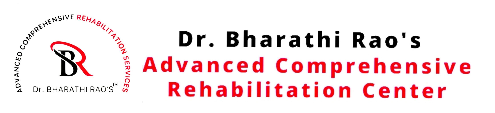

<!DOCTYPE html>
<html lang="en">

<head>
    <meta charset="UTF-8">
    <meta name="viewport" content="width=device-width, initial-scale=1.0">
    <title>footer</title>
    <link rel="stylesheet" href="footer.css">
</head>

<body>
    <!-- Footer -->

    <footer class="footer">
    <div class="footer-container">
        <!-- Left Section (Logo & Description) -->
        <div class="footer-left">
            
            <p class="footer-text">
                We maintain the decency in human behavior by showing respect to every patient,
                their families, and our co-workers.
            </p>
        </div>

        <!-- Middle Section (Useful Links) -->
        <div class="footer-links">
            <h3>Useful Links</h3>
            <ul>
                <li><a href="index.html">Home</a></li>
                <li><a href="about.html">About Us</a></li>
                <li><a href="gallery.html">Gallery</a></li>
                <li><a href="services.html">Services</a></li>
                <li><a href="testimonials.html">Testimonials</a></li>
            </ul>
        </div>

        <!-- Right Section (Contact Info & Google Map) -->
        <div class="footer-right">
            <div class="footer-contact">
                <h3>Contact Us</h3>
                <p>📍 ST. MARY'S GROUP OF INSTITUTIONS, Deshmuki Village, Telangana 508 284, India</p>
                <p>📞 +91 72079 96776</p>
                <p>✉️ info@drbharathiraos.com</p>
            </div>
            <div class="footer-map-container">
                <iframe
                    src="https://www.google.com/maps/embed?pb=!1m18!1m12!1m3!1d3929.438759805634!2d78.72350581480001!3d17.331445485998557!2m3!1f0!2f0!3f0!3m2!1i1024!2i768!4f13.1!3m3!1m2!1s0x3bcb0b3238ac84b3%3A0x8b9b58e2f5cbe1ce!2sDr.Bharathi%20Rao's%20Advanced%20Comprehensive%20Rehabilitation%20Services!5e0!3m2!1sen!2sin!4v1617774474890!5m2!1sen!2sin"
                    class="footer-map" allowfullscreen="" loading="lazy"></iframe>
            </div>
        </div>
    </div>
</footer>


    <script src="footer.js">

    </script>
</body>

</html>